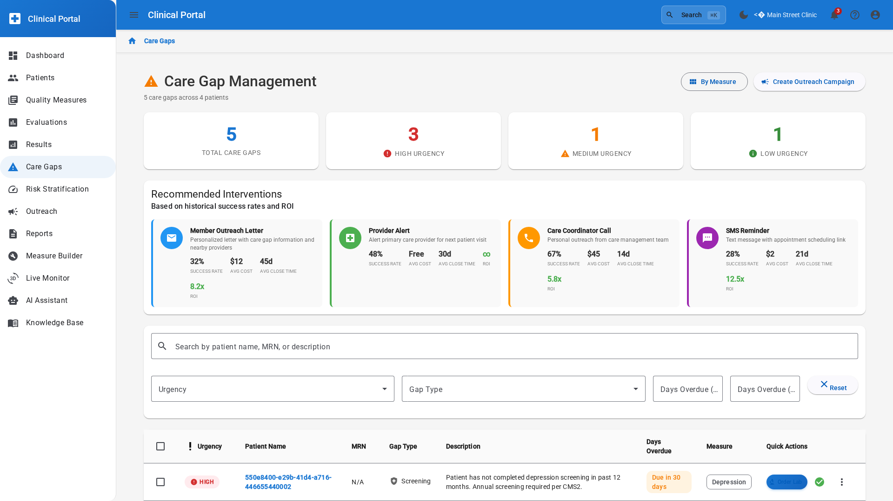

Operator view
- Care-gap prioritization by cohort and urgency
- Intervention routing for care coordinators
- Quality performance mapped to workflow execution
HDIM surfaces intervention-ready insights so care teams can prioritize patient outreach and measurable quality outcomes.

"If your team could move from lagging reports to intervention queues, what would that do to closure performance this quarter?"